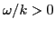
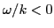
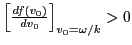
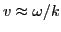

Next: Lower order approximation Up: Analytical theory of wave Previous: Wave damping
In the above, we calculate the average power absorbed by a group of resonant particles moving in a longitude wave. The result [Eq. (39)] indicates that (1) if  and , then the power is positive, which means the particles get energy from the wave, which further means the wave are damped. (2) if  and , then the power is also positive, which also means the wave are damped. The two cases [(1) and (2)] can be summarized in a simple sentence: If there are more resonant particles moving slower than the wave phase velocity than those moving faster, then the wave is damped (where the resonant particles refer to the particles with ).
The result given above is obtained in the test particle approximation, which means the wave is given and is not necessarily a self-consistent field.